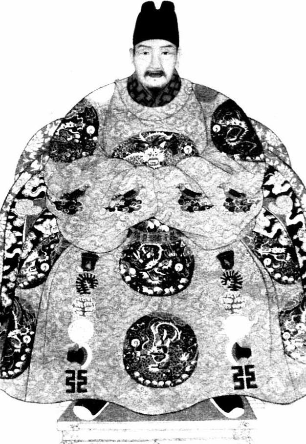

天启和崇祯，由校和由检，一对难兄难弟。在断送朱家天下方面，朱由校未必功劳最大，却属于既往一十六位皇帝中最爽快、最慷慨者。短短七年，他以近乎狂欢的方式，为明朝预备葬礼，以致“万事俱备，只欠东风”。七年之后，他把一座建造好的坟墓交给弟弟朱由检，怡然逝去。朱由检则并不乐意进入坟墓，试图挣扎着走出来，然而死亡的气息已牢牢控制了一切。
与明朝周旋十余年、战而胜之的李自成，末了，又以某种方式输给了它——至少输给了它的创始人朱元璋。明朝的崩溃和李自成的失败，同样发人深省。

明思宗朱由检。
也即崇祯皇帝，北京紫禁城龙床上的最后一位君主。做皇帝一十七年，朝野内外，危机四起，一团乱麻，他于那张龙床，如坐针毡。
人类历史转眼来到十七世纪。
本世纪，西方以英国为试验场，发生和展开一系列向现代转型的事件：国会作为民主一方，与专制一方的查理一世反复拉锯；革命爆发、查理一世被处死、克伦威尔执政；共和失败、英人再次选择君主制，然而同时通过《权利法案》，以立宪方式限制了君主权力。
地球另一端，东方，明代中国也大事频生。积攒了二百年的病症，一股脑儿赶在这个世纪二十年代至四十年代这二十年间，从内到外总体发作；巨厦将倾，朽木难支，东坍西陷，终于崩解。
难题包括：阉祸、党争、内乱、外患。四大难题，无论哪个，严重程度在明代国史上都前所未有。单独一个，即足令人焦头烂额，此刻它们却四箭齐发、联袂而至，实为罕见之极的局面。
最后两位皇帝，天启和崇祯，由校和由检，一对难兄难弟。在断送朱家天下方面，朱由校未必功劳最大，却属于既往一十六位皇帝中最爽快、最慷慨者。短短在位七年，他以近乎狂欢的方式，为明朝预备葬礼，以致“万事俱备，只欠东风”。七年之后，他把一座建造好的坟墓交给弟弟朱由检，怡然逝去。朱由检则并不乐意进入坟墓，试图挣扎着走出来，然而死亡的气息已牢牢控制了一切。朱由检不思茶饭，全力抵抗，身心俱疲，终归是困兽之斗。朱由校庙号“熹宗”，若换成另外一个同音字，改称“嬉宗”，始觉般配。朱由检亡国吊死，由满清给他陵墓起名“思陵”，似乎建议他多作反思，实际上，崇祯面临的处境，并非思索所能克服，思之无益。
孟森先生说：
熹宗，亡国之君也，而不遽亡，祖泽犹未尽也。思宗，自以为非亡国之君也，及其将亡，乃曰有君无臣。[1]
意谓，崇祯运气很差，亡国时偏偏轮着他做皇帝。天启才是名正言顺的亡国之君，可他却挺走运，早早死掉，把上吊的滋味、亡国的苦痛留与崇祯品尝。亦正因此，这哥儿俩同属一个故事情节，放到一块讲述，才算贯通、完整。